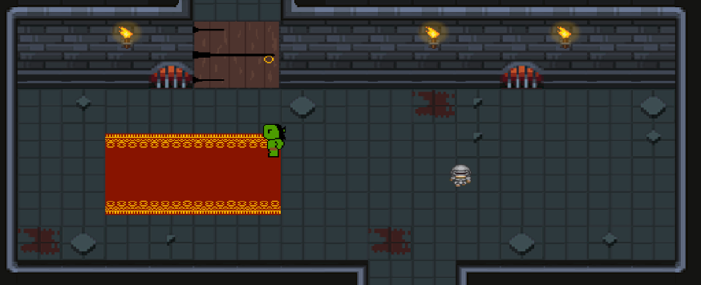
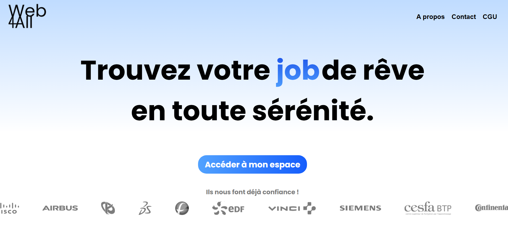
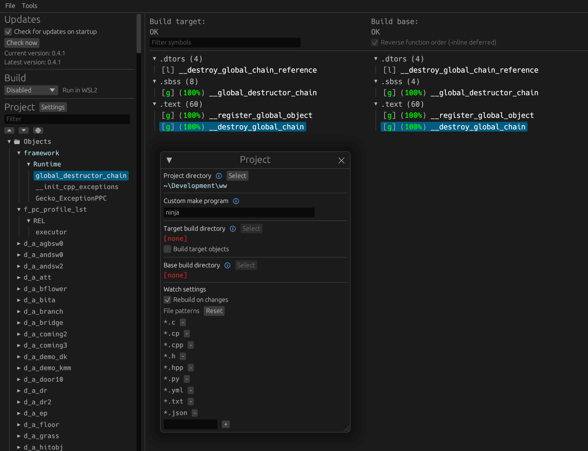
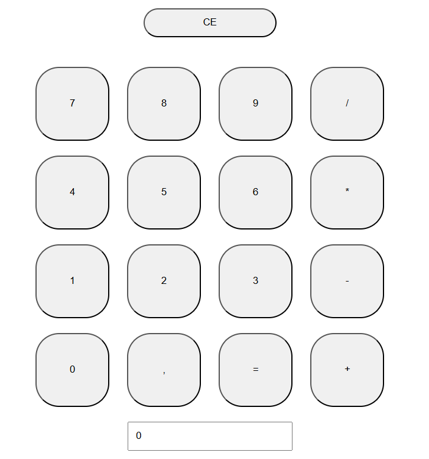
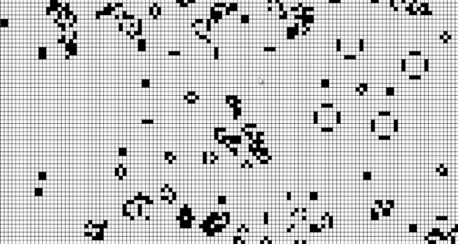
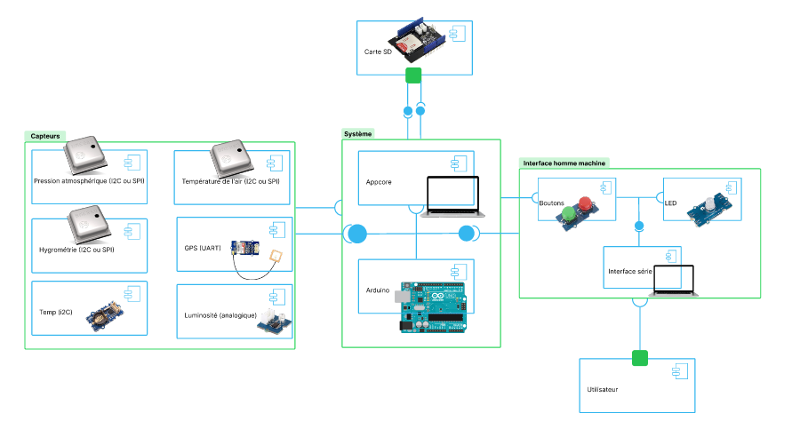

Donjon d'Alibaba
Création d'un jeu vidéo type donjon tour par tour dans le thème de Naheulbeuk.
Tech utilisées : C++, SFML, POO
Voir sur GitHub
À propos de ce projet
"Donjon d'Alibaba" est un jeu de rôle graphique humoristique développé en C++ avec la bibliothèque SFML. Inspiré de l’univers décalé de Naheulbeuk, ce RPG propose au joueur de constituer une équipe de héros atypiques pour explorer un donjon truffé de monstres absurdes, de pièges loufoques et de trésors inutiles. Le projet met l’accent sur la programmation orientée objet et la conception logicielle avancée.
- Langage C++ : Maîtrise des concepts avancés de la POO (encapsulation, héritage, polymorphisme, classes abstraites, héritage multiple).
- Architecture logicielle : Conception UML (diagrammes de classes, de séquence, d’activité) et découpage modulaire du code.
- Gestion de projet : Utilisation de Git/GitHub pour le travail collaboratif (branches, merges, gestion des versions).
- Développement graphique : Création d’une interface interactive avec SFML.
- Tests unitaires : Validation des fonctionnalités principales (combat, gestion d’objets, progression des personnages).
- Expérience utilisateur : Gameplay fluide, interface inspirée des fiches de personnage JDR, journal de quêtes, gestion d’inventaire et de progression.
Ce projet a permis de renforcer la maîtrise de la programmation orientée objet en C++, la gestion collaborative de code avec Git, ainsi que la conception et le développement d’interfaces graphiques interactives avec SFML.
Web4All
Le projet "Web4All" est une plateforme web collaborative permettant aux étudiants de rechercher, filtrer et postuler à des offres de stage centralisées, tout en facilitant la gestion des entreprises, des utilisateurs et des candidatures via une interface moderne et sécurisée.
Tech utilisées : HTML5, CSS, JavaScript, Twig, PHP (PDO), MySQL
Voir sur GitHub (Frontend) Voir sur GitHub (Backend) Accéder au site
À propos de ce projet
Ce projet web vise à centraliser les offres de stage sur une plateforme unique afin de faciliter la recherche et la gestion des candidatures pour les étudiants. Il permet de regrouper les offres, de gérer les entreprises et les utilisateurs (administrateurs, pilotes, étudiants), de filtrer les offres par compétences, de postuler en ligne (CV et lettre de motivation), de suivre les candidatures, et d’offrir une expérience utilisateur responsive. Le projet est structuré en deux parties principales :
- MVC (Frontend) : Gestion de l’interface utilisateur et du rendu des vues avec HTML, CSS et JavaScript
- API (Backend) : Logique métier, gestion des données et sécurité via des middlewares et PDO
Ce projet a permis de renforcer la maîtrise du développement web fullstack, de la conception d’architectures sécurisées en PHP/MVC, et de la gestion collaborative de projet en équipe.
Décompilation de Super Mario Galaxy 2
Décompilation et conversion en C++ du code assembleur de Super Mario Galaxy 2 afin de documenter et préserver la logique interne du jeu et son moteur.
Tech utilisées : Assembleur, C++
Voir sur GitHub
À propos de ce projet
Ce projet consiste en la décompilation en cours du jeu vidéo classique Super Mario Galaxy 2. L’objectif est d’analyser et de comprendre le code assembleur du jeu afin d’en extraire la logique de gameplay, la gestion des ressources et les mécanismes internes du moteur. Le code assembleur est progressivement converti en C++ tout en préservant fidèlement le comportement original du jeu.
- Analyse approfondie du code assembleur d’un jeu commercial
- Compréhension et documentation des systèmes internes (gameplay, moteur, ressources)
- Conversion structurée du code assembleur en C++ lisible et maintenable
- Utilisation d’outils de build multiplateformes (ninja, wine/wibo) et de scripts Python pour l’automatisation
- Diffing automatique entre le code d’origine et le code reconstruit pour garantir la fidélité du portage
Ce projet a permis de renforcer la compréhension des architectures logicielles de jeux vidéo, la rétro-ingénierie, la manipulation d’outils de build multiplateformes, ainsi que la traduction fidèle de code bas niveau en C++.
Calculatrice en JavaScript
Développement d’une calculatrice web interactive en JavaScript, permettant d’effectuer des opérations arithmétiques de base avec une interface simple et une gestion des erreurs.
Tech utilisées : HTML5, CSS, JavaScript
Voir sur GitHub
À propos de ce projet
Ce projet consiste en la réalisation d’une calculatrice web simple, développée en JavaScript, permettant d’effectuer les opérations arithmétiques de base : addition, soustraction, multiplication et division. L’interface utilisateur est intuitive et réactive, offrant un affichage clair des résultats et une gestion des erreurs de calcul.
- Interface utilisateur simple et ergonomique
- Affichage dynamique des résultats
- Bouton de réinitialisation pour effacer l’écran
- Prise en charge des erreurs de calcul (affichage d’un message d’erreur en cas d’opération invalide)
Ce projet a permis de renforcer la maîtrise du DOM, la gestion des événements en JavaScript, ainsi que la conception d’interfaces web interactives et ergonomiques.
Jeu de la Vie de Conway
Développement en Python d’une simulation console du Jeu de la Vie de Conway, affichant l’évolution d’une grille de cellules selon des règles d’automate cellulaire.
Tech utilisées : Python
Voir sur GitHub
À propos de ce projet
Ce projet consiste en l’implémentation du Jeu de la Vie de John Conway, un automate cellulaire où chaque cellule d’une grille évolue selon des règles précises de naissance, de survie et de mort. Le programme, développé en Python, permet de générer une grille initiale aléatoire ou vide, puis de visualiser l’évolution du système au fil des générations directement dans le terminal.
- Génération d’une grille vide ou aléatoire avec un taux de remplissage configurable
- Calcul automatique des voisins pour chaque cellule, gestion complète des bords et coins
- Application des règles du Jeu de la Vie pour déterminer l’état futur de la grille
- Affichage en temps réel de l’évolution de la grille sur plusieurs générations dans la console
Ce projet a permis de renforcer la logique algorithmique, la gestion de structures de données en Python, la modélisation de systèmes dynamiques, et l’affichage interactif en console.
Station météo
Développement d’un système embarqué sur Arduino permettant de mesurer et d’afficher en temps réel des données environnementales (température, humidité, pression, luminosité, GPS), avec gestion multi-modes, configuration dynamique et sauvegarde des paramètres.
Tech utilisées : C, Arduino
Voir sur GitHub
À propos de ce projet
Ce projet consiste en la conception et la programmation d’un système embarqué à l’aide d’une carte Arduino. L’objectif était de réaliser un dispositif capable de collecter, traiter et afficher des données issues de différents capteurs (température, humidité, pression, luminosité, GPS), tout en offrant plusieurs modes de fonctionnement (standard, configuration, maintenance, économique) et une gestion avancée des interactions utilisateur via des boutons et des LED RGB.
- Conception du circuit électronique : Sélection et câblage des capteurs (BME280, capteur de luminosité, GPS), boutons poussoirs et LED RGB sur une carte Arduino.
- Programmation embarquée : Développement en langage C Arduino pour gérer la lecture des capteurs, l’affichage des données, la gestion des modes, l’enregistrement des paramètres en EEPROM, et la communication série.
- Gestion des modes : Passage entre les différents modes via appui court ou long sur les boutons, avec indication visuelle par LED.
Ce projet a permis de renforcer la maîtrise de la conception de circuits électroniques, la programmation de systèmes embarqués en C Arduino, la gestion de capteurs et d’interfaces utilisateur, ainsi que l’optimisation de la mémoire et de la robustesse logicielle.
À propos de moi
Passionné par le développement web et les nouvelles technologies, je suis toujours à la recherche de nouveaux défis à relever. Curieux, rigoureux et créatif, j'aime concevoir des solutions innovantes et apprendre en continu. Mon objectif est de contribuer à des projets ambitieux tout en développant mes compétences techniques et humaines.
Me contacter
- Email : baptistenoisette1212@gmail.com
- Téléphone : 07 60 55 44 32
- LinkedIn : linkedin.com/in/baptistenoisette
- GitHub : github.com/KazeRequiem
- Disponibilité : 6 Octobre 2025
- Mobilité : Hauts-de-France, Centre-Val de Loire